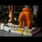

<html>
 <head>
  <title>
   #PizzaGateDARKSIDE In light of Podesta's email about playing "dominos" on "cheese" or "pasta". "Domino" meaning domination, slavery, "cheese" little girl and "pasta" boy.
  </title>
  <meta content="Post on /v/Pizzagate archived on 2016-12-01 by rivercontrol." name="description"/>
  <meta content="#PizzaGateDARKSIDE In light of Podesta's email about playing &quot;dominos&quot; on &quot;cheese&quot; or &quot;pasta&quot;. &quot;Domino&quot; meaning domination, slavery, &quot;cheese&quot; little girl and &quot;pasta&quot; boy." property="og:title"/>
  <meta content="Post on /v/Pizzagate archived on 2016-12-01 by rivercontrol." property="og:description"/>
  <link href="../../page.css" rel="stylesheet"/>
  <meta content="https://voat.pizzagate.hackliberty.org/thumbnails/fd/ba/fdba86bb-be9f-40f5-a8b7-48a490727d0b.jpg" property="og:image"/>
  <meta content="https://voat.pizzagate.hackliberty.org/1450639.html" property="og:url"/>
 </head>
</html>
<body class="dark">
 <div id="container">
  <!-- array (
  'submissionid' => 1450639,
  'creationDate' => '2016-12-01 00:14:33',
  'domain' => 'youtube.com',
  'formattedContent' => NULL,
  'isAdult' => 0,
  'isAnonymized' => 0,
  'subverse' => 'pizzagate',
  'thumbnail' => 'fdba86bb-be9f-40f5-a8b7-48a490727d0b.jpg',
  'title' => '#PizzaGateDARKSIDE In light of Podesta\'s email about playing "dominos" on "cheese" or "pasta". "Domino" meaning domination, slavery, "cheese" little girl and "pasta" boy.',
  'url' => 'https://www.youtube.com/watch?v=a5oo3i38K2g',
  'userName' => 'rivercontrol',
  'archivedLink' => NULL,
  'archivedDomain' => NULL,
  'isDeleted' => 0,
) -->
  <div style="text-align:center; font-size:24px; font-weight:bold;">
   Voat /v/Pizzagate Archive
  </div>
  <div class="content" role="main">
   <div class="sitetable linklisting" id="siteTable">
    <div class="submission id-1450639 link type-text" id="submission-1450639">
     <a name="submissionTop">
     </a>
     <p class="parent">
     </p>
     <a class="thumbnail may-blank" href="https://www.youtube.com/watch?v=a5oo3i38K2g" target="_self">
      
     </a>
     <div class="entry unvoted">
      <p class="title">
       <a class="title may-blank" href="https://www.youtube.com/watch?v=a5oo3i38K2g" tabindex="1" target="_self" title="#PizzaGateDARKSIDE In light of Podesta's email about playing &quot;dominos&quot; on &quot;cheese&quot; or &quot;pasta&quot;. &quot;Domino&quot; meaning domination, slavery, &quot;cheese&quot; little girl and &quot;pasta&quot; boy.">
        #PizzaGateDARKSIDE In light of Podesta's email about playing "dominos" on "cheese" or "pasta". "Domino" meaning domination, slavery, "cheese" little girl and "pasta" boy.
       </a>
       <span class="domain">
        (
        <a href="https://archive.searchvoat.co/search.php?d=youtube.com">
         youtube.com
        </a>
        )
       </span>
      </p>
      <p class="tagline">
       submitted
       <time datetime="2016-12-01T00:14:33+00:00" title="12/01/2016 12:14:33 AM">2016-12-01T00:14:33</time> by
       <span class="userattrs">
        <a class="author may-blank" href="https://archive.searchvoat.co/search.php?u=rivercontrol">
         rivercontrol
        </a>
       </span>
      </p>
      <ul class="flat-list buttons">
       <li class="first">
        <a class="comments may-blank" href="https://archive.searchvoat.co/v/pizzagate/1450639" rel="nofollow">
         2 comments
        </a>
       </li>
      </ul>
     </div>
     <div class="child">
     </div>
     <div class="clearleft">
     </div>
    </div>
    <div class="clearleft">
    </div>
   </div>
   <div class="horizontal-line">
   </div>
   <div class="commentarea">
    <div class="sitetable nestedlisting" id="siteTable">
     <div class="child id-7008406 comment even" style="">
      <div class="entry unvoted">
       <div class="noncollapsed" id="7008406" style=";">
        <p class="tagline">
         <a class="author may-blank" href="https://archive.searchvoat.co/search.php?u=hitex">
          hitex
         </a>
         <span class="userattrs">
         </span>
         <time datetime="2016-12-01T02:04:58+00:00" title="12/1/2016 2:04:58 AM">2016-12-01T02:04:58</time>
        </p>
        <div class="usertext-body may-blank-within" id="commentContent-7008406">
         <div class="md">
          <p>
           <p>
            damn, cant even get takeout anymore....
           </p>
          </p>
         </div>
        </div>
        <ul class="flat-list buttons">
         <li class="first">
          <a class="bylink" href="https://archive.searchvoat.co/v/pizzagate/1450639/7008406" rel="nofollow">
           link
          </a>
         </li>
        </ul>
       </div>
      </div>
     </div>
     <div class="child id-7006631 comment even" style="">
      <div class="entry unvoted">
       <div class="noncollapsed" id="7006631" style=";">
        <p class="tagline">
         <a class="author may-blank" href="https://archive.searchvoat.co/search.php?u=rivercontrol">
          rivercontrol
         </a>
         <span class="userattrs">
         </span>
         <time datetime="2016-12-01T00:18:11+00:00" title="12/1/2016 12:18:11 AM">2016-12-01T00:18:11</time>
        </p>
        <div class="usertext-body may-blank-within" id="commentContent-7006631">
         <div class="md">
          <p>
           <p>
            I remember these Domino Pizza "Noid" ads as a kid growing up in 80's outside of DC. Each one features the "Noid" an evil, masked, "horned" creature in all red subjecting pizzas to all kinds of hellish abuse.
           </p>
           <p>
            Why else would you name a pizza place "Domino's"? I could never figure it out.
           </p>
           <p>
            I also did a search on Wiki and found this: "In 1993, they became the second American franchise to open in the Dominican Republic and the first one to open in Haiti, under the direction of entrepreneur Luis de Jesús Rodríguez."
           </p>
           <p>
            Hati pizza connection.
           </p>
          </p>
         </div>
        </div>
        <ul class="flat-list buttons">
         <li class="first">
          <a class="bylink" href="https://archive.searchvoat.co/v/pizzagate/1450639/7006631" rel="nofollow">
           link
          </a>
         </li>
        </ul>
       </div>
      </div>
     </div>
    </div>
   </div>
  </div>
 </div>
 <div class="footer-container">
 </div>
</body>
